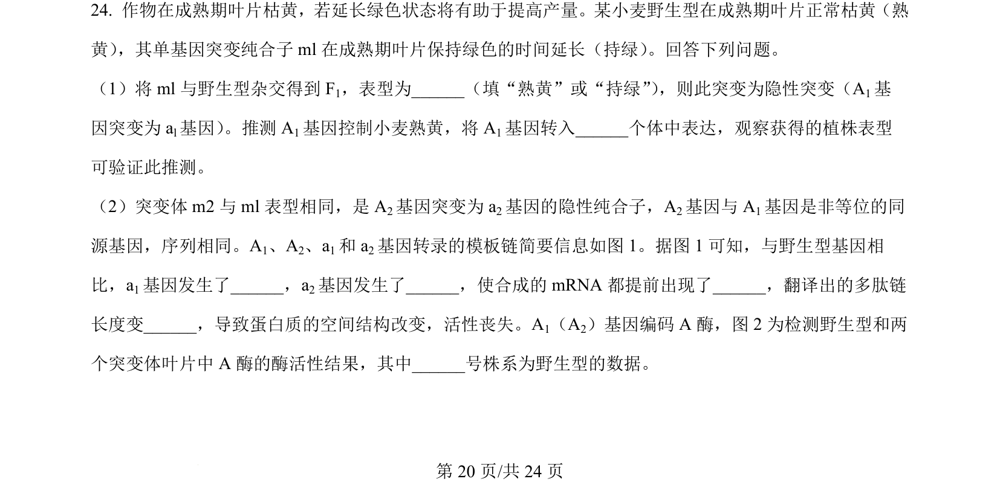
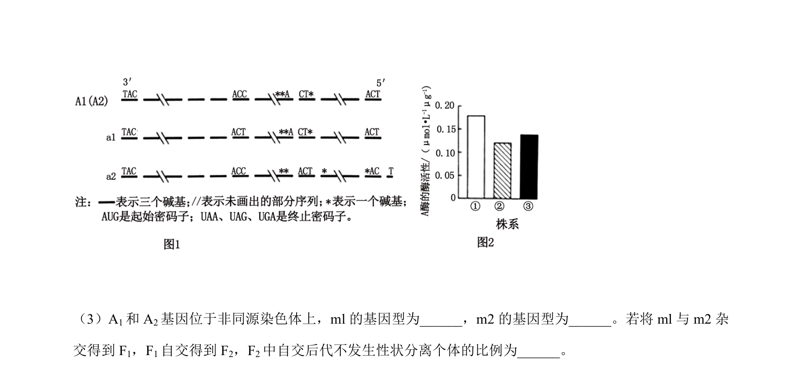
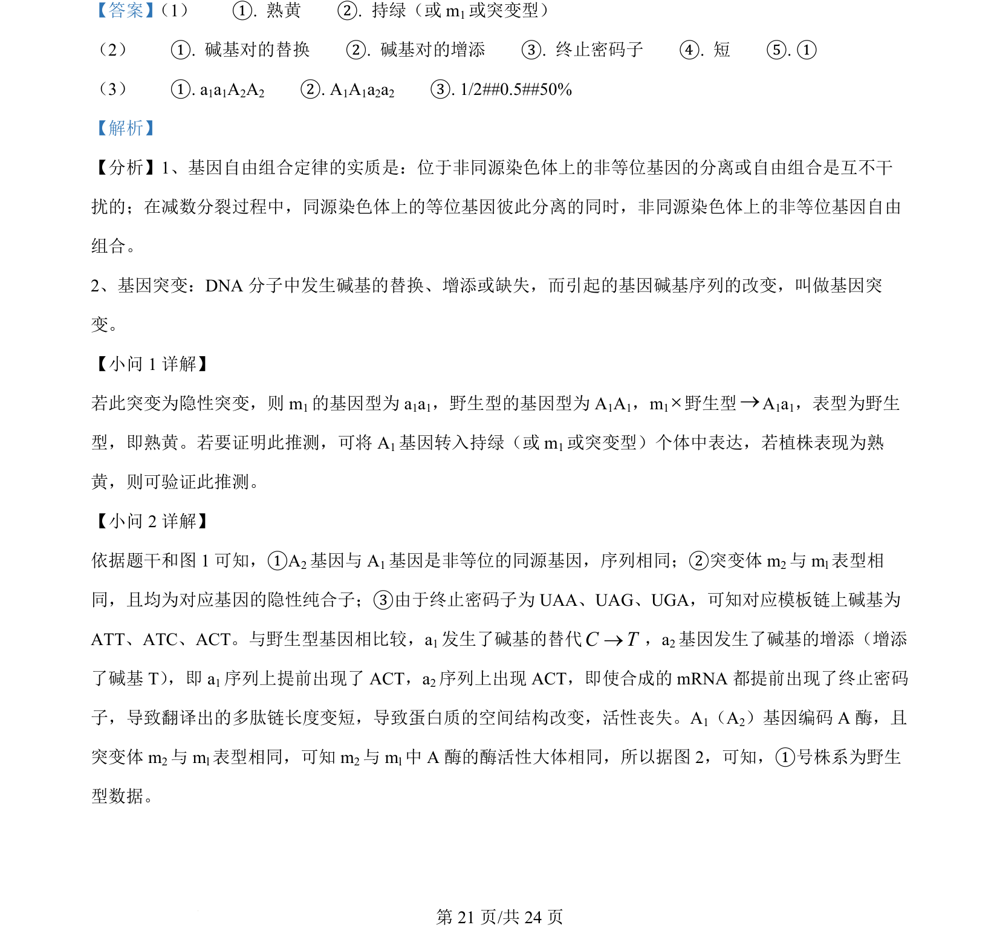
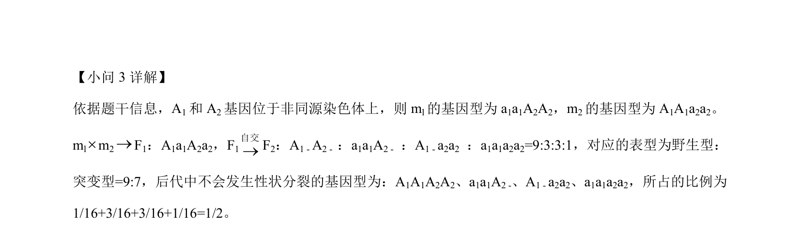

2024-辽宁-24
吉林2024卷辽宁不分题24题型解答难中
考点：隐性突变 基因突变 翻译提前终止 酶活性测定
题面


摘要
该题以小麦叶片持绿与熟黄突变为背景，考查基因突变类型判断、转基因功能验证及基因结构变异与酶活性分析。
关联考点
答案与解析


📄 原 PDF 第 20 页：素材/真题/吉林/2008-2024·（吉林）生物高考真题/2024年高考生物试卷（辽宁）（解析卷）.pdf
题干文本
- 作物在成熟期叶片枯黄，若延长绿色状态将有助于提高产量。某小麦野生型在成熟期叶片正常枯黄（熟
黄） ，其单基因突变纯合子ml在成熟期叶片保持绿色的时间延长（持绿） 。回答下列问题。
（1）将 ml与野生型杂交得到 F1，表型为__（填“熟黄”或“持绿”） ，则此突变为隐性突变（A1基
因突变为 al基因） 。推测A1基因控制小麦熟黄，将 A1基因转入_个体中表达，观察获得的植株表型
可验证此推测。
（2）突变体 m2与 ml表型相同，是 A2基因突变为 a2基因的隐性纯合子，A2基因与 A1基因是非等位的同
源基因，序列相同。A1、A2、a1和 a2基因转录的模板链简要信息如图 1。据图 1 可知，与野生型基因相
比，a1基因发生了，a2基因发生了，使合成的 mRNA 都提前出现了，翻译出的多肽链
长度变，导致蛋白质的空间结构改变，活性丧失。A1（A2）基因编码 A 酶，图 2 为检测野生型和两
个突变体叶片中 A 酶的酶活性结果，其中___号株系为野生型的数据。
的
解析文本